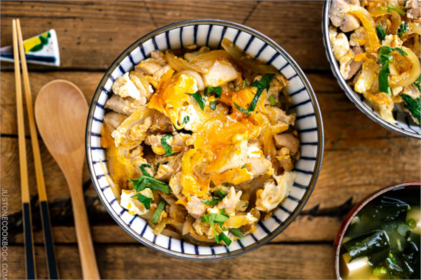

Home
Oyakodon

Description
Oyakodon is a classic comfort food of Japanese home cooking. Tender pieces of chicken and eggs are simmered in an umami-rich, dashi-based sauce and then poured over a bowl of fluffy steamed rice. Simple, delicious, and utterly comforting, this is the kind of one-bowl meal you can cook in less than 30 minutes!
This recipe serves 2 people
Ingredients
- Chicken thighs, 200 g
- Sake, 1 tbsp
- Eggs, 4 (200g without shell)
- Dashi, 100 mL
- Soy sauce, 2 tbsp
- Mirin, 2 tbsp
- Sugar, 2 tbsp
- Rice, 2 servings
- Green onion
Steps
- Combine the dashi, soy sauce, mirin, and sugar in a bowl or a liquid measuring cup and mix all together until the sugar is dissolved.
- Chop the green onions 1.3 cm wide.
- Trim the extra bits of fat and connective tissue from the chicken with the knife.
- Cut the chicken thigh along the grain into strips 2-2.5 cm wide. Next, angle your knife back and diagonally (nearly parallel to the cutting board), and then slice the chicken strips against the grain into pieces about 2-2.5 cm square. This “sogigiri” cutting technique gives the chicken pieces equal thickness and creates more surface area for fast cooking and better absorption of the flavors.
- Transfer the chicken to a bowl or tray and sprinkle with the sake. Set aside for 5 minutes.
- Crack the eggs into a bowl. Using a pair of chopsticks, lift the egg whites to "cut" them 5-6 times into a few smaller clumps. This will prevent the egg whites from falling into the frying pan all at once. Do not whisk or beat the eggs together.
- With the stove off, add the seasonings mixture, turn on the heat to medium and bring it to a simmer.
- Once simmering, add the chicken evenly in the pan. Once simmering again, lower the heat to medium low. Cook, uncovered, for 5 minutes or until the chicken is no longer pink. Halfway through, flip the chicken.
- Increase the heat to medium. With the cooking liquid simmering (small bubbles around the edges), drizzle two-thirds of the eggs in a circular pattern over the chicken and onions, avoiding the edges of the pan where the eggs can easily overcook.
- When the eggs are still runny but just set, add the rest of the eggs to the center and around the edges of the pan. Add the mitsuba (or green onion) on top and cook on medium low until the egg is done to your liking.
- Serve steamed rice in individual serving bowls. Spoon the cooked chicken and egg mixture onto the steamed rice and drizzle the desired amount of pan sauce on top.